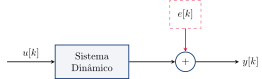
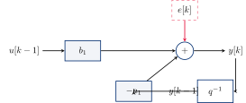
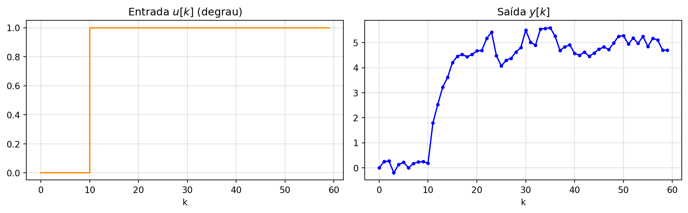
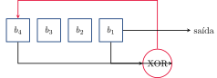
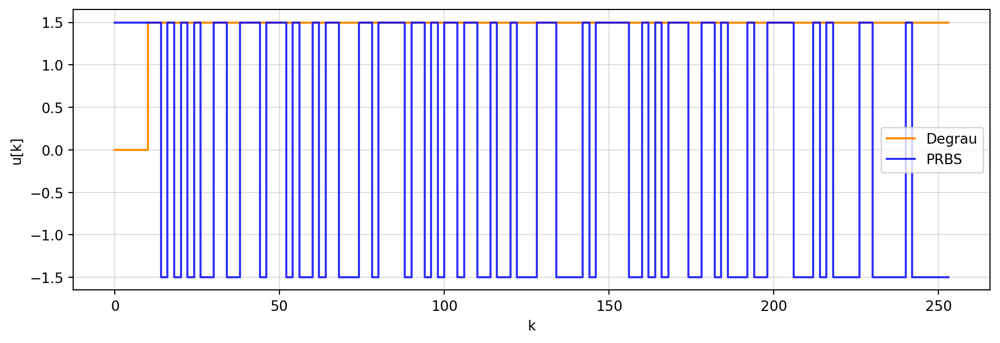
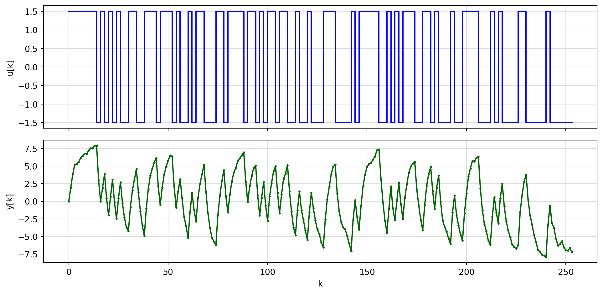
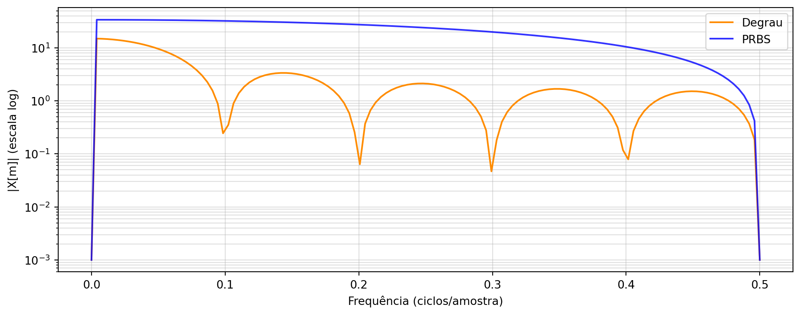

Simulação de Sistemas e Sinais PRBS
Identificação de Sistemas
Universidade Federal do Pará
Da Estática à Dinâmica
Na aula anterior, ajustamos uma reta a dados estáticos: cada saída \(y_i\) dependia apenas da entrada \(x_i\) correspondente, no mesmo instante.
Sistemas dinâmicos têm memória: a saída no instante \(k\) depende de entradas e saídas passadas.
- Nível de um tanque depende da vazão de entrada acumulada;
- Velocidade de um motor DC depende da tensão aplicada e da inércia;
- Temperatura de um forno responde de forma gradual à potência aplicada.
Para identificar esses sistemas, precisamos de dados que capturem essa dinâmica — e de um sinal de entrada bem projetado para excitá-la.
Representação Entrada-Saída
Um sistema dinâmico discreto pode ser visto como um operador que transforma uma entrada \(u[k]\) em uma saída \(y[k]\), sujeito a uma perturbação \(e[k]\):

\(u[k]\): entrada (conhecida/controlada); \(y[k]\): saída medida; \(e[k]\): ruído/perturbação não medida.
Por que Simular?
Antes de aplicar identificação a um sistema real, é valioso simular um sistema com parâmetros conhecidos:
- Permite gerar dados de forma controlada e repetível;
- O “gabarito” (parâmetros verdadeiros) é conhecido, então dá para validar se o método de identificação funciona;
- Facilita testar o efeito de diferentes sinais de entrada, ruídos e quantidades de dados — sem custo nem risco de um experimento real.
Vamos simular um sistema simples, coletar dados de entrada e saída, e (na próxima aula) estimar seus parâmetros a partir desses dados.
Modelo ARX de Referência
Um modelo discreto muito usado para representar a dinâmica é o ARX (AutoRegressive with eXogenous input):
\[A(q)\,y[k] = B(q)\,u[k] + e[k]\]
Com \(A(q) = 1 + a_1 q^{-1}\) e \(B(q) = b_1 q^{-1}\) (\(q^{-1}\) é o operador atraso: \(q^{-1}y[k] = y[k-1]\)), o modelo se escreve:
\[y[k] + a_1\, y[k-1] = b_1\, u[k-1] + e[k]\]
Isolando \(y[k]\):
\[y[k] = -a_1\, y[k-1] + b_1\, u[k-1] + e[k]\]
Vamos adotar os valores verdadeiros \(a_1 = -0{,}7\) e \(b_1 = 1{,}5\) para gerar os dados simulados.
Diagrama de Blocos do ARX

A saída realimenta a própria entrada do sistema (laço com atraso \(q^{-1}\)) — essa é a diferença estrutural em relação ao ajuste de reta, que não tinha realimentação.
Simulando o ARX em Python
A função reproduz, amostra a amostra, a equação de diferenças do modelo ARX — este será nosso “sistema real” a ser identificado.
Qual Sinal de Entrada Usar?
Testando o sistema com um simples degrau:

Após o transitório, \(u\) e \(y\) ficam constantes: poucas amostras carregam informação nova sobre a dinâmica. Um único degrau não excita o sistema o suficiente para estimar bem \(a_1\) e \(b_1\).
Persistência de Excitação
Para estimar os parâmetros com confiança, o sinal de entrada precisa ser persistentemente excitante: variar de forma rica o bastante para que a dinâmica do sistema se manifeste em várias condições.
Sinais de excitação comuns:
- Degrau / sequência de degraus — simples, mas pobre em conteúdo espectral;
- Ruído branco — rico, mas amplitude difícil de limitar (picos podem saturar atuadores);
- PRBS (Pseudo-Random Binary Sequence) — alterna entre dois níveis fixos, combina riqueza espectral com amplitude limitada;
- Chirp / multissenoidal — varredura controlada de frequências.
Vamos explorar o PRBS, um dos sinais mais usados na prática de identificação de sistemas.
Sequência Binária Pseudoaleatória (PRBS)
Um PRBS é um sinal que alterna deterministicamente entre dois níveis (ex.: \(-A\) e \(+A\)), mas com um padrão que se comporta estatisticamente como ruído branco.
Propriedades:
- Periódico e determinístico — reprodutível, ao contrário de ruído real;
- Espectro aproximadamente plano (banda larga) até uma frequência de corte;
- Autocorrelação próxima de um impulso — característica de ruído branco;
- Amplitude limitada a dois níveis — protege atuadores e sensores contra excessos.
Por isso é um sinal muito usado para excitar sistemas antes de um experimento de identificação.
Gerando PRBS: Registrador de Deslocamento (LFSR)
A forma clássica de gerar um PRBS é um LFSR (Linear Feedback Shift Register): um registrador de \(n\) bits cujo bit de entrada é a soma (XOR) de bits específicos (“taps”) do próprio registrador.

Com uma escolha adequada de taps (polinômio primitivo), o LFSR percorre todos os \(2^n - 1\) estados não nulos antes de repetir — gerando a sequência de comprimento máximo.
PRBS “na Mão” (n = 4 bits)
def lfsr(seed, taps, n_bits):
reg = list(seed)
out = []
for _ in range(n_bits):
out.append(reg[-1])
fb = reg[0] ^ reg[taps] # XOR entre dois bits do registrador
reg = [fb] + reg[:-1] # desloca e insere o novo bit
return out
seq = lfsr(seed=[1,1,1,1], taps=3, n_bits=20)
print(seq)
print("Período =", 2**4 - 1, "(comprimento máximo para n=4)")[1, 1, 1, 1, 0, 1, 0, 1, 1, 0, 0, 1, 0, 0, 0, 1, 1, 1, 1, 0]
Período = 15 (comprimento máximo para n=4)A sequência de 15 bits se repete a partir da 16ª amostra — comprimento máximo \(2^4-1=15\), como esperado.
PRBS na Prática: scipy.signal
Para uso real, geramos sequências mais longas com scipy.signal.max_len_seq:
from scipy.signal import max_len_seq
n_bits = 7 # período = 2^7 - 1 = 127
bits, _ = max_len_seq(n_bits)
prbs_unit = 2 * bits - 1 # converte {0,1} -> {-1,+1}
Ts_bit = 2 # amostras por bit (segura o nível por Ts_bit passos)
A = 1.5 # amplitude
u_prbs = A * np.repeat(prbs_unit, Ts_bit)
print(f"Comprimento do PRBS: {len(u_prbs)} amostras")Comprimento do PRBS: 254 amostrasTs_bit (duração de cada bit) controla a faixa de frequências excitada — veremos isso na análise espectral.
Degrau vs. PRBS

O degrau visita poucos “regimes”; o PRBS chaveia continuamente, revisitando transições em instantes variados.
Parâmetros de Projeto do PRBS
Duas escolhas de projeto determinam a qualidade do experimento:
Duração do bit \(T_{bit}\) (em amostras): deve ser menor ou da ordem da constante de tempo dominante do sistema, para excitar sua dinâmica rápida. \[T_{bit} \lesssim \tau_{sistema}\]
Duração total do experimento: deve cobrir vários períodos do PRBS e ser bem maior que o tempo de acomodação do sistema, para que a dinâmica de regime permanente também seja capturada.
Para o nosso sistema, o polo é \(-a_1 = 0{,}7\), o que dá uma constante de tempo (em amostras):
\[\tau = \frac{-1}{\ln(0{,}7)} \approx 2{,}8 \text{ amostras}\]
Compatível com o \(T_{bit}=2\) amostras escolhido.
Coletando os Dados
| k | u | y | |
|---|---|---|---|
| 0 | 0 | 1.5 | 0.000 |
| 1 | 1 | 1.5 | 1.938 |
| 2 | 2 | 1.5 | 3.832 |
| 3 | 3 | 1.5 | 5.214 |
| 4 | 4 | 1.5 | 5.315 |

Esses dados \((u[k], y[k])\) serão usados na próxima aula para estimar o modelo ARX.
Por que Olhar no Domínio da Frequência?
O sinal de entrada precisa “cobrir” as frequências que o sistema pode manifestar. Antes de rodar o experimento, é útil verificar quanto do espectro um sinal candidato realmente excita.
A ferramenta para isso é a Transformada de Fourier, que decompõe um sinal temporal em suas componentes de frequência.
Transformada de Fourier Discreta (DFT)
Para um sinal amostrado \(x[k]\), \(k=0,\dots,N-1\), a DFT é:
\[X[m] = \sum_{k=0}^{N-1} x[k]\, e^{-j 2\pi m k / N}, \qquad m = 0, \dots, N-1\]
- \(|X[m]|\): quanto da energia do sinal está na frequência \(f_m = m/(N T_s)\);
- Frequência máxima representável (Nyquist): \(f_{Nyq} = 1/(2T_s)\);
- Calculada de forma eficiente via FFT (Fast Fourier Transform).
Espectro: Degrau vs. PRBS
from numpy.fft import rfft, rfftfreq
def espectro(x):
X = np.abs(rfft(x - np.mean(x)))
f = rfftfreq(len(x), d=1) # frequência normalizada (ciclos/amostra)
return f, X
f_step, X_step = espectro(u_step)
f_prbs, X_prbs = espectro(u_prbs)
fig, ax = plt.subplots(figsize=(10, 4))
ax.semilogy(f_step, X_step + 1e-3, color='darkorange', label='Degrau')
ax.semilogy(f_prbs, X_prbs + 1e-3, color='blue', label='PRBS', alpha=0.8)
ax.set_xlabel('Frequência (ciclos/amostra)'); ax.set_ylabel('|X[m]| (escala log)')
ax.legend(); ax.grid(alpha=0.4, which='both')
plt.tight_layout(); plt.show()
O degrau concentra energia em baixas frequências; o PRBS distribui energia em banda larga, testando o sistema em muito mais frequências.
Leitura do Espectro do PRBS
- O espectro do PRBS é aproximadamente plano até uma frequência relacionada a \(1/T_{bit}\), e decai depois disso;
- Isso significa que \(T_{bit}\) define até que frequência o sinal realmente excita o sistema;
- \(T_{bit}\) pequeno → excita frequências mais altas (dinâmicas rápidas); \(T_{bit}\) grande → energia concentrada em baixas frequências.
Por isso a regra prática \(T_{bit} \lesssim \tau_{sistema}\): garante energia suficiente na faixa de frequências onde a dinâmica do sistema realmente responde.
Resumo
- Sistemas dinâmicos têm memória: \(y[k]\) depende do passado de \(u\) e \(y\);
- Simulamos um sistema ARX de referência com parâmetros conhecidos;
- Um degrau não excita o sistema o suficiente — é preciso um sinal persistentemente excitante;
- O PRBS é gerado por um LFSR, tem espectro de banda larga e amplitude limitada;
- Projetamos o PRBS (\(T_{bit}\), duração) e coletamos os dados \((u[k], y[k])\);
- A análise de Fourier confirma o conteúdo espectral do sinal de excitação.
Próxima aula: usar esses dados para estimar os parâmetros do modelo ARX por mínimos quadrados.

Prof. Dr. Raphael Teixeira
Universidade Federal do Pará